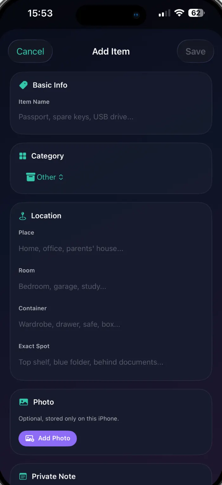
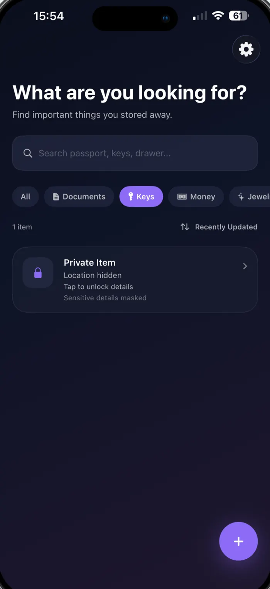
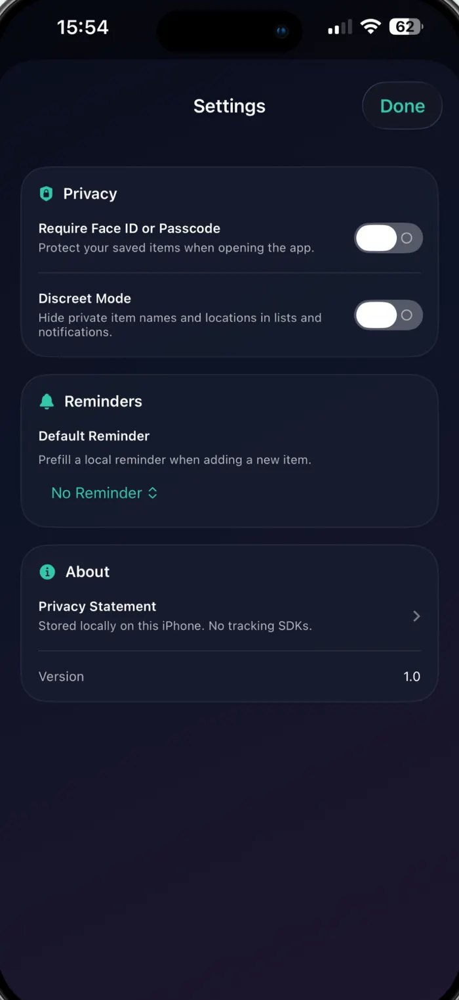
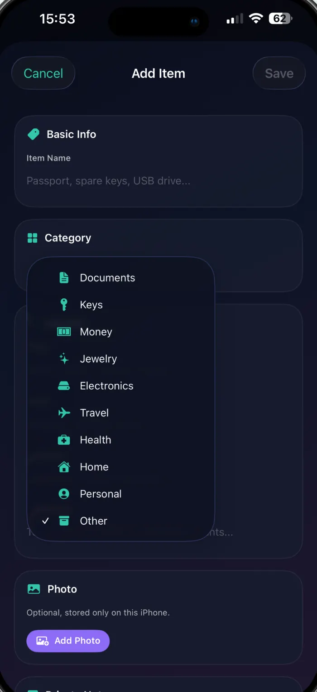
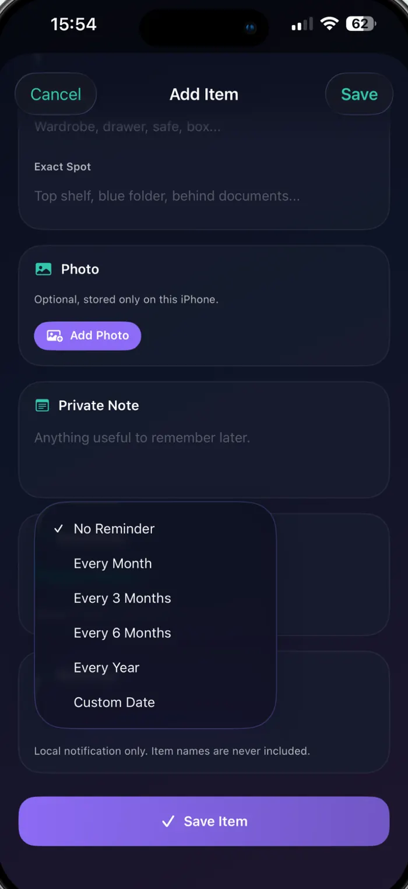

iPhone · Free · No account
“Somewhere safe” isn’t an address.
The note you never wrote — the room, the drawer, the exact corner where you put your passport, your spare keys, your emergency cash. On your iPhone, behind Face ID, with no account to create.
- Home
- Study
- Filing cabinet
- Blue folder, behind the deeds
Typed by you, stored on your device. No GPS, no map, no lookup.



Why it exists
Everyone has a safe place. Nobody remembers it.
You didn’t lose the passport. You put it somewhere sensible — so sensible that months later, the sensible place is every drawer in the house.
- 06:10 The passport Flight in three hours, and the folder isn’t where you would have sworn it was.
- Locked out The spare key You definitely gave one to someone. Or hid one. Somewhere sensible.
- Laptop died The backup drive It’s with the cables. The cables are in one of four possible drawers.
- Claim time The warranty papers The receipt exists. Its whereabouts do not.
Saving something
Four fields, from the front door inwards.
A location is only useful if it’s specific. SafeSpotter walks you from the building to the exact corner, so future you doesn’t have to guess.
- Place Home · Office · Parents’ house
- Room Bedroom · Garage · Study
- Container Wardrobe · Drawer · Safe · Box
- Exact spot Top shelf · Blue folder · Behind the documents
And, if it helps:
- Photo
- Private note
- Category
- Sensitivity
- Check-in reminder
Typed, not tracked. These are words you write, not coordinates. SafeSpotter never asks for location access, never opens a map, and has no idea where you or your things actually are.
Finding it again
One search box. Everything you wrote.
Search runs across names, categories, places, rooms, containers, exact spots and your private notes — instantly, on the device, offline. Type “blue folder” and the passport turns up.
Ten categories
Documents, keys, money, jewellery, electronics, travel, health, home, personal, other — filter the list down with one tap.
Works with no signal
Everything is stored on the device. Aeroplane mode, a basement, a foreign SIM — it all still opens instantly.

Privacy
An app that knows where your valuables are should know nothing else.
SafeSpotter has no account, no developer server and no analytics. Here is the entire data story, in two columns.
Stays on your iPhone
Written to the app’s own storage, and to your private iCloud database if you switch sync on.
- Item names and categories
- Places, rooms, containers, exact spots
- Private notes and photos you attach
- Reminder dates and sensitivity levels
- Face ID results — handled by the Secure Enclave, never seen by the app
Reaches the developer
Nothing at all.
- No SafeSpotter account, no sign-in, no email address
- No developer server your content is sent to
- No analytics or crash-reporting SDKs
- No advertising and no third-party trackers
- No location permission, ever
Locked behind Face ID
Turn on the app lock and SafeSpotter asks for Face ID, Touch ID or your passcode before it shows anything. It waits for you to tap Unlock — no surprise scans.
Discreet Mode
Mark an item Private or Highly Private and its name and location are masked in the list, in search and in notifications until you unlock them.
iCloud sync, only if you ask
One switch in Settings. On: your items travel through your private iCloud database, with encrypted CloudKit fields and encrypted photo assets. Off: a local-only store on this iPhone.
Sync is a choice you can reverse. Turning iCloud sync off copies everything into a local-only store on the device; turning it back on merges what changed. Copies already in iCloud stay in your account until you remove them there — SafeSpotter can’t reach into your iCloud to delete them, and neither can anyone else.
Staying true
A nudge to check the things you never touch.
Monthly, every three or six months, yearly, or a date you pick. SafeSpotter reminds you to confirm an item is still where you left it, then records when you last checked.
The notification never names the item. It’s a local notification, scheduled on the device, worded so a glance at your lock screen gives nothing away.

- Price
- Free
- Version
- 1.1
- Size
- 2.6 MB
- Requires
- iOS 17.0
- Category
- Utilities
- Language
- English
Questions
The things people ask first.
Does SafeSpotter track my location?
No. It never requests location access and shows no maps. A “location” in SafeSpotter is text you type — Home › Bedroom › Wardrobe › Top shelf — and it means nothing to anyone but you.
Can you see what I store?
No. There is no SafeSpotter account and no developer server holding your content. With iCloud sync on, your items sit in your own private iCloud database, which the developer cannot open. There are no analytics, crash-reporting or advertising SDKs in the app.
Do I need iCloud?
No. Sync is a single switch in Settings and it is optional. With it off, SafeSpotter uses a local-only store on that iPhone. With it on, the same items appear on your other devices signed in to the same Apple Account.
What happens if I lose my iPhone?
If iCloud sync was on, sign in to iCloud on the new device and your items come back. If it was off, restore the device from an iCloud or computer backup. Without either, there is nothing to restore from — the developer holds no copy.
Is it really free?
Yes. No subscription, no in-app purchases, no ads.
What is Discreet Mode?
A switch in Settings that masks anything you marked Private or Highly Private. The list shows “Private Item · Location hidden” instead of the name and place, and reminders keep the same silence, until you unlock the entry.
Does it work offline?
Always. Adding, searching and opening items never needs a connection. iCloud sync, when enabled, simply catches up the next time the device is online.
Which devices does it run on?
iPhone on iOS 17.0 or later. It also runs on Apple Silicon Macs and Apple Vision Pro through Apple’s compatibility layer.
Give your important things an address.
Free on the App Store. Nothing to sign up for, nothing to configure — add the first item in about twenty seconds.